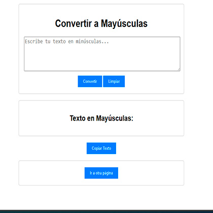
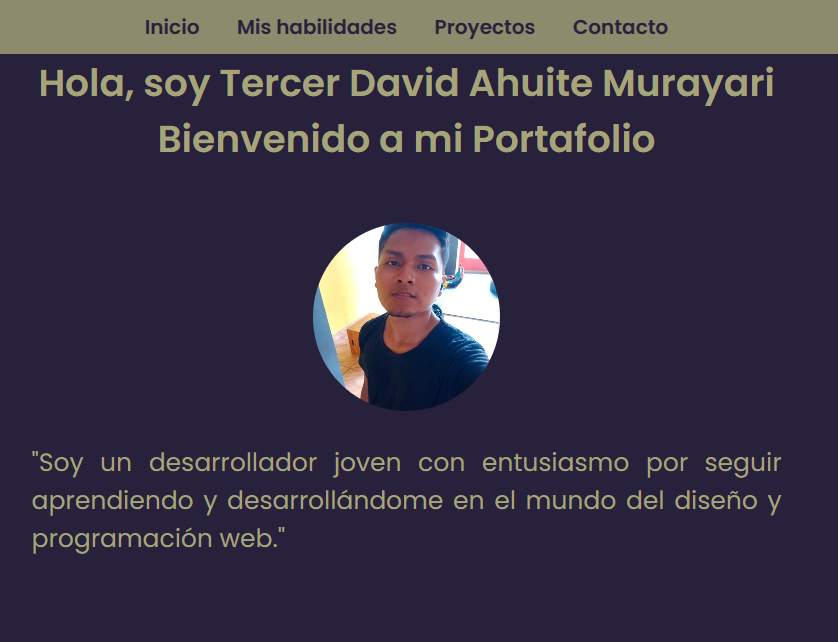

Hola, soy Tercer David Ahuite Murayari
Bienvenido a mi Portafolio

"Soy un desarrollador joven con entusiasmo por seguir aprendiendo y desarrollándome en el mundo del diseño y programación web."
Mis habilidades


Mis Proyectos

Convertir Minúsculas a Mayúsculas
Nuestra página web ofrece una herramienta fácil y rápida para convertir texto de minúsculas a mayúsculas de forma automática.
Ver Proyecto GitHub

Mi Portafolio
He creado un portafolio web para demostrar mis habilidades y experiencia en programación. Esto me permite destacar ante potenciales empleadores y colaboradores, estableciendo mi credibilidad profesional y facilitando la conexión con la comunidad laboral. Además, el portafolio actúa como una herramienta para el aprendizaje continuo y como referencia para futuros proyectos y colaboraciones.
GitHub